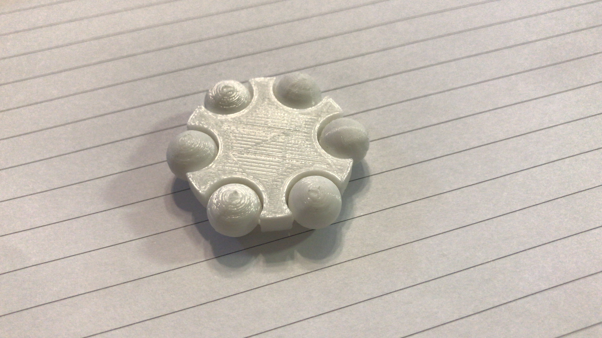

Home page
3D Printing
Designing the Assignment for clearance.
For 3D printing, we used autodesk fusion 360 to edit and afterwards, converted the file into an stl file,an using "Ultimaker cura 4.6".
When using ultimaker cura, after importing the file, it was necessary to slice the object and observe how the end product would look like when slicing. For my assignment, it involves clearance, which would be the space between objects, the gap, and because we have yet to print the object it is hard to say anything about it. Also, editting the speed, the infill and building supports all affect the final print and the total time taken to for the print.

After Printing
The image above shows how it looks like after printing, and the results were that for the clearance of 0.1 to 0.4mm were almost unable to rotate,with crazy amounts of resistance acting against it were on the verge of breaking the rod and 0.4 causing the least resistance. While the clearance of 0.5 and 0.6mm were able to easily rotate and able to slide along the smaller rods of the object. Hence, this shows that for the best minimal clearance for a object would be within o.4mm to 0.5mm for a tight fit, for a rather looser fit, 0.5mm would be more recommended. I am not sure but my numbers on the model was not able to be printed out as it was probably too small. Below cotains an image of how it practically looks like and also a copy of the f3d file for the assignment. The link to my groups website is here.
Clearance file